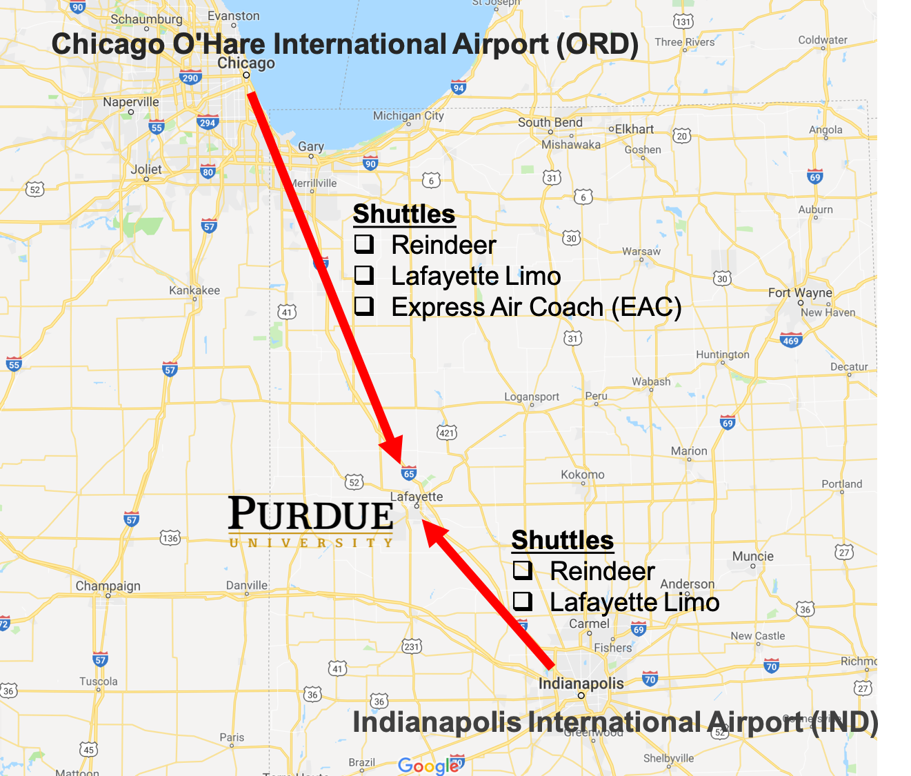

TRAVEL
By plane (and shuttle service)
The nearest commercial airports are Indianapolis International (65 miles, around one hour away by car or by shuttle) and Chicago O’Hare (140 miles, around three hour away by car or by shuttle). Shuttle service is provided to and from airports.
Shuttle Services from Indianapolis international airports (IND):
Reindeer: https://www.reindeershuttle.com/
Lafayette Limo: https://www.lafayettelimo.com/
Shuttle Services from Chicago O'Hare international airports (ORD):
(Local time in Purdue is 1 hour ahead of Chicago.)
Reindeer: https://www.reindeershuttle.com/
Lafayette Limo: https://www.lafayettelimo.com/
EAC: https://expressaircoach.com/
By Bus
Greyhound Bus services the Lafayette-West Lafayette area from the Chicago, Gary, Hammond and Indianapolis hubs. Schedules and fares vary, so consult the Greyhound website
Greyhound: https://www.greyhound.com/
Hoosier Ride provides direct daily service to and from major metropolitan locations with connecting service throughout North America. Visit the Hoosier Ride website to learn more.
Hoosierride: https://hoosierride.com/
By Automobile
From the Chicago Area:
I-65 south to Exit #178, St. Rd. 43. Follow 43 to West Lafayette (7 miles) to light at intersection of 43 and St. Rd. 26/State Street. Right on 26/State Street to second light/Grant Street. Right on Grant St. one-half block. Garage is on the right.
From the Indianapolis Area:
I-65 north to Exit #172, St. Rd. 26/State Street. Follow 26/State Street through Lafayette (watch for signs). Once you cross the Wabash River, you will be in West Lafayette. From the river, go to the fourth light/Grant Street. Right on Grant Street one-half block. Garage is on the right.
More information:
https://www.purdue.edu/visit/getting-here/
https://www.purdue.edu/campus_map/
